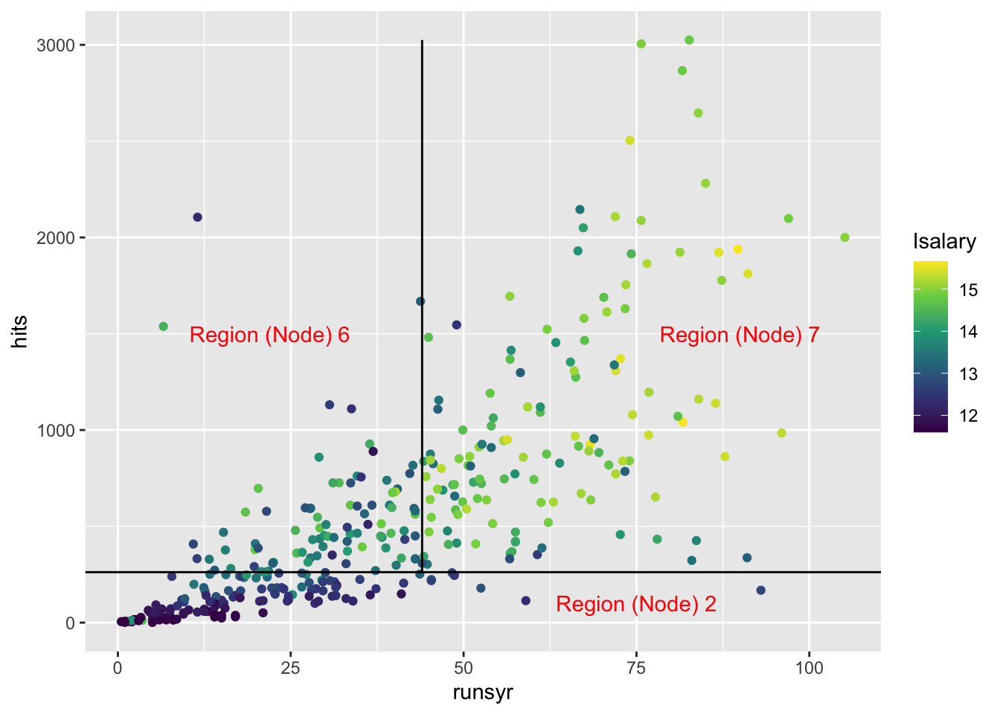
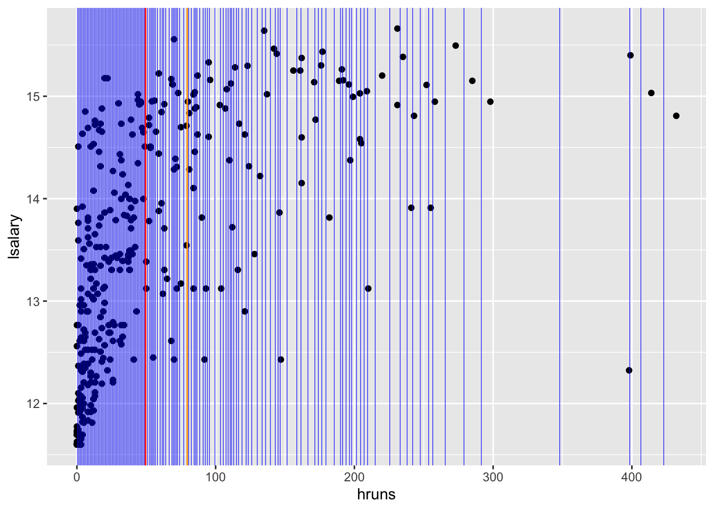
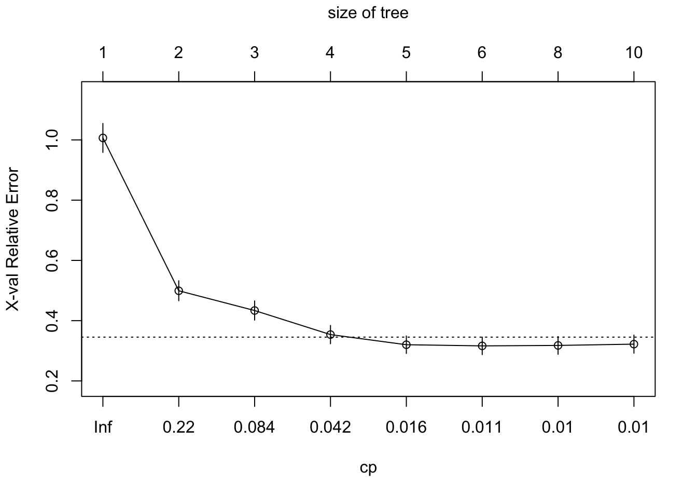
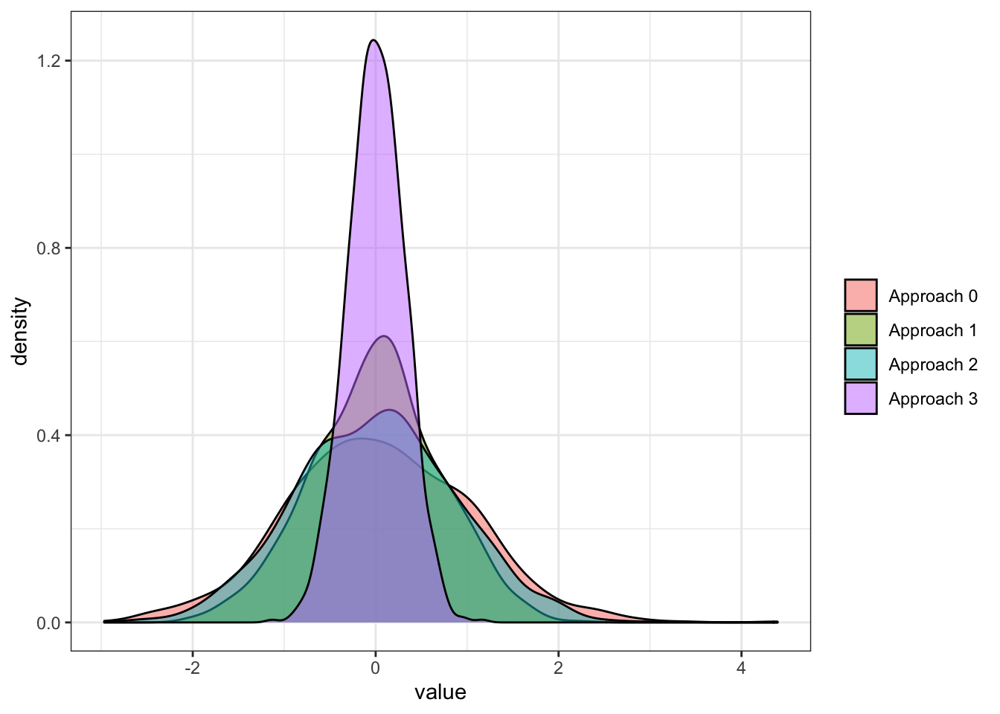

library(tidyverse)
library(data.table)
library(rpart)
library(rattle)
library(wooldridge)
library(gganimate)6 Random Forest
The main goal of this chapter is to learn random forest (RF) for regression. RF is first conceived by Breiman (2001), and it has been one of the most popular machine learning methods. It also has been an inspiration to many other ML methods including extreme gradient boosting (Chen and Guestrin 2016), generalized random forest (Athey, Tibshirani, and Wager 2019).
We first start with understanding how a regression tree is built, which is the foundation of all the forest-based ML methods. We then learn how random forest is built as an extension of a regression tree and how to train it.
6.1 Regression tree
Packages to load for replication
6.1.1 What is it?
Here is an example of regression tree to explain logged salary (lsalary) using the mlb1 data from the wooldridge package.
Code
#=== get mlb1 data (from wooldridge) ===#
data(mlb1)
#=== build a simple tree ===#
simple_tree <-
rpart(
lsalary ~ hits + runsyr,
data = mlb1,
control = rpart.control(minsplit = 200)
)
fancyRpartPlot(simple_tree, digits = 4)Here is how you read the figure. At the first (root) node, all the observations belong to it (\(n=353\)) and the estimate of lsalary is \(13.49\), which is simply the sample average of lsalary. Now, the whole dataset is split into two groups (nodes) based on the criteria of whether hits is less than 262 or not. If yes, then such observations will be grouped into the node with “2” on top (the leftmost node), and the estimated lsalary for all the observations in that group (\(n = 132\)) is \(12.35\), which is the sample average of lsalary of the \(132\) observations in the group. If no, then such observations will be grouped into the node with “3” on top, and the estimated lsalary for all the observations in that group (\(n = 221\)) is \(14.17\). This node is further split into two groups based on whether runsyr is less than \(44\) or not. For those observations with runsyr \(< 44\) (second node at the bottom), estimated lsalary is \(13.58\). For those with runsyr \(>= 44\) (rightmost node at the bottom), estimated lsalary is \(14.56\).
As illustrated in the figure above, a regression tree splits the data into groups based on the value of explanatory variables, and all the observations in the same group will be assigned the same estimate, which isthe sample average of the dependent variable of the group.
Another way of illustrating this grouping is shown below:
Code
ggplot(mlb1) +
geom_point(aes(y = hits, x = runsyr, color = lsalary)) +
scale_color_viridis_c() +
geom_hline(yintercept = 262) +
geom_line(
data = data.table(x = 44, y = seq(262, max(mlb1$hits), length = 100)),
aes(y = y, x = x)
) +
annotate(
"text",
x = 75, y = 100,
label = "Region (Node) 2",
color = "red"
) +
annotate(
"text",
x = 22, y = 1500,
label = "Region (Node) 6",
color = "red"
) +
annotate(
"text",
x = 90, y = 1500,
label = "Region (Node) 7",
color = "red"
)
An algorithm called recursive binary splitting is used to split the predictor space like the example above. Suppose you have K explanatory variables (\(X_1, \dots, X_K\)). Further, let \(c\) denote the threshold that splits the sample into two regions such that {\(X|X_k < c\)} and {\(X|X_k \geq c\)}.
{\(X|X_k < c\)} means observations that satisfy the condition stated right to the vertical bar (|). Here, it means all the observations for which its \(X_k\) value is less than \(c\).
- Step 1: For each of the covariates (\(X_1\) through \(X_K\)), find all the threshold values that result in unique splits.
- Step 2: For each of the covariate-threshold combinations, calculate the sum of the squared residuals of its resulting split, and find the threshold value with the lowest sum of the squared residuals by covariate.
- Step 3: Among all the best splits by covariate (as many as the number of explanatory variables), pick the variable-threshold combination that leads to the lowest sum of the squared residuals.
The data is then split according to the chosen criteria and then the same process is repeated for each of the branches, ad infinitum until the user-specified stopping criteria is met. This way of splitting is called a greedy (or I would call it myopic or shortsighted) approach because the split is sought to minimize the immediate RSS without considering the implication of the split for the later splits.
Let’s try to write this process for the first split from the beginning node using the mlb1 data as an illustration based on a simple grid search to find the optimal thresholds (Step 1).
Note that the R codes here are deliberately inefficient as they focus on illustrating the process.
#=== get data ===#
library(wooldridge)
data(mlb1)
mlb1_dt <-
mlb1 %>%
data.table() %>% # turn into data.table
.[, salary := NULL] %>% # remove salary (use lsalary instead)
na.omit() # remove observations with NA in any of the variablesLet’s work on splitting based on hruns. One way to find the all the threshold values is simply find the mean of two consecutive numbers from the ordered unique hruns values.
value_seq <-
#=== order hruns values and find the unique values ===#
mlb1_dt[order(hruns), unique(hruns)] %>%
#=== get the rolling mean ===#
frollmean(2) %>%
.[-1]Figure 6.1 shows all the threshold values (blue lines) stored in value_seq that result in unique splits.
Code
threshold_data <-
data.table(thre = value_seq) %>%
.[, id := 1:.N]
ggplot(mlb1_dt) +
geom_point(aes(y = lsalary, x = hruns)) +
geom_vline(
data = threshold_data,
aes(xintercept = thre),
color = "blue",
size = 0.2
) +
geom_vline(xintercept = value_seq[[50]], color = "red") +
geom_vline(xintercept = value_seq[[70]], color = "orange")
For each value in value_seq, we find RSS. For example, for the 50th value in value_seq (the red line in Figure 6.1),
copy(mlb1_dt) %>%
#=== find the mean of lsalary by whether hruns is less than the threshold or not ===#
.[, y_hat := mean(lsalary), by = (hruns < value_seq[50])] %>%
#=== get squared residuals ===#
.[, (lsalary - y_hat)^2] %>%
#=== get RSS ===#
sum()[1] 291.1279How about 70th value in value_seq (the orange line in Figure 6.1)?
copy(mlb1_dt) %>%
#=== find the mean of lsalary by whether hruns is less than the threshold or not ===#
.[, y_hat := mean(lsalary), by = (hruns < value_seq[70])] %>%
#=== get squared residuals ===#
.[, (lsalary - y_hat)^2] %>%
#=== get RSS ===#
sum()[1] 322.3688This means value_seq[50] (49.5) is a better threshold than value_seq[70] (79.5).
Okay, let’s consider all the candidate threshold values now, not just 50th and 70th, and then pick the best.
get_rss <- function(i, var_name, value_seq, data)
{
rss <-
copy(data) %>%
setnames(var_name, "var") %>%
.[, y_hat := mean(lsalary), by = (var < value_seq[i])] %>%
.[, (lsalary - y_hat)^2] %>%
sum()
return_data <-
data.table(
rss = rss,
var_name = var_name,
var_value = value_seq[i]
)
return(return_data)
}Here are RSS values at every value in value_seq.
rss_value <-
lapply(
seq_len(length(value_seq)),
function(x) get_rss(x, "hruns", value_seq, mlb1_dt)
) %>%
rbindlist()
head(rss_value) rss var_name var_value
1: 396.8287 hruns 0.5
2: 383.2393 hruns 1.5
3: 362.5779 hruns 2.5
4: 337.0760 hruns 3.5
5: 325.4865 hruns 4.5
6: 309.2780 hruns 5.5tail(rss_value) rss var_name var_value
1: 437.6865 hruns 279.0
2: 440.0806 hruns 291.5
3: 441.9307 hruns 348.0
4: 437.6143 hruns 398.5
5: 441.0689 hruns 406.5
6: 443.3740 hruns 423.0Finding the threshold value that minimizes RSS,
rss_value[which.min(rss), ] rss var_name var_value
1: 259.7855 hruns 27.5Okay, so, the best threshold for hruns is 27.5
Suppose we are considering only five explanatory variables in building a regression tree: hruns, years, rbisyr, allstar, runsyr, hits, and bavg. We do the same operations we did for hruns for all the variables.
get_rss_by_var <- function(var_name, data)
{
temp_data <-
copy(data) %>%
setnames(var_name, "temp_var")
#=== define a sequence of values of hruns ===#
value_seq <-
temp_data[order(temp_var), unique(temp_var)] %>%
#=== get the rolling mean ===#
frollmean(2) %>%
.[-1]
setnames(temp_data, "temp_var", var_name)
#=== get RSS ===#
rss_value <-
lapply(
seq_len(length(value_seq)),
function(x) get_rss(x, var_name, value_seq, temp_data)
) %>%
rbindlist() %>%
.[which.min(rss),]
return(rss_value)
}Looping over the set of variables,
(
min_rss_by_var <-
lapply(
c("hruns", "years", "rbisyr", "allstar", "runsyr", "hits", "bavg"),
function(x) get_rss_by_var(x, mlb1_dt)
) %>%
rbindlist()
) rss var_name var_value
1: 259.7855 hruns 27.500000
2: 249.9090 years 3.500000
3: 261.1537 rbisyr 31.794642
4: 277.3388 allstar 7.417582
5: 249.5106 runsyr 37.666666
6: 205.1488 hits 356.500000
7: 375.0281 bavg 252.499992So, the variable-threshold combination that minimizes RSS is hits - 356.5. We now have the first split. This tree is developed further by splitting nodes like this.
6.1.2 A note on splitting algorithm
Minimizing RSS is equivalent to maximize the sum of similarity score from the two splits. Let \(C_1(r)\) and \(C_2(r)\) denote the set of observations that belong to the first and second splits, respectively given splitting rule \(r\). For a given split combination \(C_1(r)\) and \(C_2(r)\), the estimators for the two splits are simply the average value of \(Y\) in the respective splits. Denoting the means as \(\hat{\mu}_1\) and \(\hat{\mu}_2\), minimizing RSS can be written as
\[ \begin{aligned} \min_r \sum_{i\in C_1} (\hat{\mu}_1 - Y_i)^2 + \sum_{i\in C_2} (\hat{\mu}_2 - Y_i)^2 \end{aligned} \tag{6.1}\]
\(\hat{\mu}_k = \frac{\sum_{i\in C_k} Y_i}{N_k}\), where \(N_k\) is the number of observations in \(C_k\).
Now, in general, the following holds
\[ \begin{aligned} \sum_{i\in C_k} (\hat{\mu}_k - Y_i)^2 = \sum_{i\in C_k} Y_i^2 - \sum_{i\in C_k} \hat{\mu}_k^2 \end{aligned} \]
So, Equation 6.1 can be rewritten as
\[ \begin{aligned} \min_r \sum_{i\in C_1(r)} Y_i^2 + \sum_{i\in C_2(r)} Y_i^2 - (\sum_{i\in C_1(r)} \hat{\mu}_1^2 + \sum_{i\in C_2(r)} \hat{\mu}_2^2) \end{aligned} \]
Since \(\sum_{i\in C_1(r)} Y_i^2 + \sum_{i\in C_2(r)} Y_i^2\) is always the same, it can be further reduced to
\[ \begin{aligned} & \min_r - N_1 (\frac{\sum_{i\in C_1(r)} Y_i}{N_1})^2 - N_2 (\frac{\sum_{i\in C_2(r)} Y_i}{N_2})^2 \\ \Rightarrow & \min_r - \frac{(\sum_{i\in C_1(r)} Y_i)^2}{N_1} - \frac{(\sum_{i\in C_2(r)} Y_i)^2}{N_2} \end{aligned} \tag{6.2}\]
where \(N_1\) and \(N_2\) are the number of observations in \(C_1\) and \(C_2\), respectively. \(\frac{(\sum_{i\in C_k} Y_i)^2}{N_k}\) is called similarity score . The name comes from the fact that the more similar element in \(C_k\) are, the higher the score is. Consider for example, a four-observation case where their values of the dependent variable are \(\{3, 2, -1, -2\}\). For the split \(\{3, 2\}\), \(\{-1, -2\}\), the similarity score is \(17 (=25/2 + 9/2)\). However, if the split is \(\{2, -2\}\), \(\{3, -1\}\), then the score is \(2 (=0/2 + 4/2)\). Since summation happens first and then the sum is squared, the more similar the elements are, the higher the score is.
Equation 6.2 can be reformulated as the maximization problem with the objective function being the sum of the similarity scores from the two splits.
\[ \begin{aligned} \textcolor{red}{\max}_r \frac{(\sum_{i\in C_1(r)} Y_i)^2}{N_1} + \frac{(\sum_{i\in C_2(r)} Y_i)^2}{N_2} \end{aligned} \tag{6.3}\]
Note that it is much more computationally efficient to solve this maximization problem than the RSS minimization problem (Equation 6.1). In the RSS minimization problem, for each split, you calculate the mean, subtract it from \(Y_i\) for all the observations, square them and sum them. On the other hand, in the similarity score maximization problem, you can simply sum \(Y_i\) and then square it for each split. So, programatically, tree building is done using Equation 6.3. You can also see the use of Equation 6.3 in the extreme gradient boosting algorithm (Chapter 8) and also in the implementation of GRF (Chapter 17).
6.1.3 Training a regression tree
You can fit a regression tree using rpart() from the rpart package. Its syntax is similar to that of lm() for a quick fitting.
rpart(
formula,
data
)Using mlb1, let’s fit a regression tree where lsalary is the dependent variable and hruns, years, rbisyr, allstar, runsyr, hits, and bavg are the explanatory variables.
#=== fit a tree ===#
fitted_tree <-
rpart(
lsalary ~ hruns + years + rbisyr + allstar + runsyr + hits + bavg,
data = mlb1_dt
)Here is the visualization of the fitted tree using fancyRpartPlot() from the rattle package.
fancyRpartPlot(fitted_tree)Now, you may wonder why rpart() is not building a tree that has as many leaves as the number of observations so that we have a perfect prediction for the train data (mlb1). If we are simply implementing recursive binary splitting, then it should not have stopped where it stopped. This is because rpart() sets parameter values that control the development of a tree by default. Those default parameters can be seen below:
rpart.control()$minsplit
[1] 20
$minbucket
[1] 7
$cp
[1] 0.01
$maxcompete
[1] 4
$maxsurrogate
[1] 5
$usesurrogate
[1] 2
$surrogatestyle
[1] 0
$maxdepth
[1] 30
$xval
[1] 10For example, minsplit is the minimum number of observations that must exist in a node in order for a split to be attempted. cp refers to the complexity parameter. For a given value of cp, a tree is build to minimize the following:
\[ \sum_{t=1}^T\sum_{x_i\in R_t} (y_i - \hat{y}_{R_t})^2 + cp\cdot T \]
where \(R_t\) is the \(t\)th region and \(\hat{y_{R_t}}\) is the estimate of \(y\) for all the observations that reside in \(R_t\). So, the first term is RSS. The objective function has a penalization term (the second term) just like shrinkage methods we saw in Section 4.1. A higher value of cp leads to a less complex tree with less leaves.
If you want to build a much deeper tree that has many leaves, then you can do so using the control option like below.
full_tree <-
rpart(
lsalary ~ hruns + years + rbisyr + allstar + runsyr + hits + bavg, # formula
data = mlb1_dt, # data
control = # control of the hyper parameters
rpart.control(
minsplit = 2,
cp = 0 # complexity parameter
)
)Let’s see how amazing this tree is by comparing the observed and fitted lsalary values.
#=== get fitted values ===#
mlb1_dt[, y_hat := predict(full_tree, newdata = mlb1_dt)]
#=== visualize the fit ===#
ggplot(data = mlb1_dt) +
geom_point(aes(y = lsalary, x = y_hat)) +
geom_abline(slope = 1, color = "red")Yes, perfect prediction accuracy! At least for the train data anyway. But, we all know we want nothing to do with this kind of model. It is clearly over-fitting the train data.
In order to find a reasonable model, we can use KCV over cp. Fortunately, when we run rpart(), it automatically builds multiple trees at different values of cp that controls the number of leaves and conduct KCV. You can visualize this using plotcp().
plotcp(fitted_tree)
MSE and cp are presented on the y- and x-axis, respectively. According to the KCV results, cp \(= 0.018\) provides the tree with the smallest number of leaves (the most simple) where the MSE value is within one standard deviation from the lowest MSE. You can access the tree built under cp \(= 0.018\) like below.
#=== get the best tree ===#
best_tree <- prune(full_tree, cp = 0.018)
#=== visualize it ===#
fancyRpartPlot(best_tree)Even though how a regression tree is build in R. In practice, you never use a regression tree itself as the final model for your research as its performance is rather poor and tend to over-fit compared to other competitive methods. But, understanding how building a regression tree is important to understand its derivatives like random forest, boosted regression forest.
6.2 Random Forest (RF)
Regression tree approach is often not robust and suffers from high variance. Here, we look at the process called bagging and how it can be used to train RF model, which is much more robust than a regression tree.
6.2.1 Bagging (Bootstrap Averaging)
Before talking about how RF is trained. Let’s first talk about the concept of bagging. Let \(\theta(X)\) denote the statistics of interest you would like to estimate from the data. Bagging (Bootstrap averaging) works like this:
- Bootstrap the data many times
- Estimate \(\theta(X)\) for each of the bootstrapped datasets (\(\hat{\theta}_1, \dots, \hat{\theta}_B\))
- Average the estimates and use it as the final estimate of \(\theta(X)\).
\[ \hat{\theta}(X) = \frac{\hat{\theta}_1(X) + \dots + \hat{\theta}_B(X)}{B} \]
To understand the power of bagging, we need to understand the power of averaging and when it is most effective using a very simple example of estimating the expected value of a random variable.
Consider two random variables \(x_1\) and \(x_2\) from the identical distribution, where \(E[x_i] = \alpha\) and \(Var(x_i) = \sigma^2\). You are interested in estimating \(E[x_i]\). We have two options:
- Option 1: Use \(x_1\) as the estimate of \(E[x_i]\).
- Option 2: Use the mean of \(x_1\) and \(x_2\) as the estimate of \(E[x_i]\)
The variance of the first estimator is of course simply the variance of \(x_1\), so \(\sigma^2\).
For option 2, we know the following relationship holds in general:
\[ \begin{aligned} Var(\frac{x_1 + x_2}{2}) & = \frac{Var(x_1)}{4} + \frac{Var(x_2)}{4} + \frac{Cov(x_1, x_2)}{2} \\ & = \frac{\sigma^2}{2} + \frac{Cov(x_1, x_2)}{2} \end{aligned} \]
So, how good the mean of \(x_1\) and \(x_2\) as an estimator depends on \(Cov(x_1, x_2)\). When they are perfectly positively correlated, then \(Cov(x_1, x_2) = Var(x_1) = \sigma^2\). So, \(Var(\frac{x_1 + x_2}{2})\) is \(\sigma^2\), which is no better than option 1.
This makes sense because adding information from one more variable that is perfectly correlated with the other variable does nothing because they are the same values.
However, as long as \(x_1\) and \(x_2\) are not perfectly correlated, option 2 is better. The benefit of averaging is greater when the value of \(Cov(x_1, x_2)\) is smaller.
Let’s do a little experiment to see this. We consider four approaches:
- Approach 0: use \(x_1\) as the estimator
- Approach 1: use \((x_1 + x_2)/2\) as the estimator (\(x_1\) and \(x_2\) are independent)
- Approach 2: use \((x_1 + x_2)/2\) as the estimator (\(x_1\) and \(x_2\) are positively correlated)
- Approach 3: use \((x_1 + x_2)/2\) as the estimator (\(x_1\) and \(x_2\) are negatively correlated)
#=== set the number of observations to 1000 ===#
N <- 1000#=== first approach (no correlation) ===#
x_1 <- rnorm(N)
x_2 <- rnorm(N)
cor(x_1, x_2)[1] 0.01441585#=== second approach (positively correlated) ===#
x_1 <- rnorm(N)
x_2 <- 0.5 * x_1 + sqrt(1-(0.5)^2) * rnorm(N)
cor(x_1, x_2)[1] 0.5164931#=== third approach (negatively correlated) ===#
x_1 <- rnorm(N)
x_2 <- - 0.8 * x_1 - sqrt(1-(0.8)^2) * rnorm(N)
cor(x_1, x_2)[1] -0.7944112The following function runs a single iteration of estimating \(E[x]\) using the four approaches.
get_alpha <- function(i)
{
#=== approach 0 ===#
alpha_hat_0 <- rnorm(1)
#=== approach 1 (no correlation) ===#
x_1 <- rnorm(1)
x_2 <- rnorm(1)
alpha_hat_1 <- (x_1 + x_2) / 2
#=== approach 2 (positively correlated) ===#
x_1 <- rnorm(1)
x_2 <- 0.5 * x_1 + sqrt(1-(0.5)^2) * rnorm(1)
alpha_hat_2 <- (x_1 + x_2) / 2
#=== approach 3 (negatively correlated) ===#
x_1 <- rnorm(1)
x_2 <- - 0.8 * x_1 - sqrt(1-(0.8)^2) * rnorm(1)
alpha_hat_3 <- (x_1 + x_2) / 2
return_data <-
data.table(
alpha_hat_0 = alpha_hat_0,
alpha_hat_1 = alpha_hat_1,
alpha_hat_2 = alpha_hat_2,
alpha_hat_3 = alpha_hat_3
)
return(return_data)
} Here is the results of single iteration.
get_alpha(1) alpha_hat_0 alpha_hat_1 alpha_hat_2 alpha_hat_3
1: -0.07877955 0.2331667 0.816512 -0.09266395Repeating this many times,
set.seed(234934)
sim_results <-
lapply(
1:1000,
get_alpha
) %>%
rbindlist() %>%
melt()Figure 6.2 shows the density plot of the estimates from the four approaches.
sim_results %>%
.[, label := gsub("alpha_hat_", "Approach ", variable)] %>%
ggplot(data = .) +
geom_density(
aes(x = value, fill = label),
alpha = 0.5
) +
scale_fill_discrete(name = "") +
theme_bw()
As you can see, they are all pretty much unbiased. However, all the approaches that average two values (approaches 1, 2, and 3) outperformed the base approach that relied on a single value each iteration. You can see that when the random variables are negatively correlated, the power of averaging is greater compared to when they are independent or positively correlated. The independent approach (approach 1) is better than the positive correlation approach (approach 2).
Now that we understand the power of bagging, let’s apply this to a regression problem using a tree. The statistics of interest is \(E[y|X]\), which is denoted as \(f(x)\).
- Bootstrap the data \(B\) times
- Train a regression tree to each of the bootstrapped dataset, which results in \(B\) distinctive trees
- To predict \(E[y|x]\), average the estimate from all the trees (\(\hat{f}_1(x), \dots, \hat{f}_B(x)\)) and use it as the final estimate.
\[ \hat{f}(x) = \frac{\hat{f}_1(X) + \dots + \hat{f}_B(X)}{B} \]
Let’s implement this for \(B = 10\) using mlb1_dt. First, define a function that bootstrap data, fit a regression tree, and then return the fitted values (a single iteration).
train_a_tree <- function(i, data)
{
#=== number of observations ===#
N <- nrow(data)
#=== bootstrapped data ===#
boot_data <- data[sample(1:N, N, replace = TRUE), ]
#=== train a regression tree ===#
rpart <-
rpart(
lsalary ~ hruns + years + rbisyr + allstar + runsyr + hits + bavg,
data = boot_data
)
#=== predict ===#
return_data <-
copy(data) %>%
.[, y_hat := predict(rpart, newdata = data)] %>%
.[, .(id, y_hat)] %>%
.[, tree := i]
return(return_data)
}We now repeat train_a_tree() 10 times.
#=== create observation id for later group-by averaging ===#
mlb1_dt[, id := 1:.N]
(
y_estimates <-
lapply(
1:10,
function(x) train_a_tree(x, mlb1_dt)
) %>%
rbindlist() %>%
.[order(id),]
) id y_hat tree
1: 1 15.15792 1
2: 1 15.04446 2
3: 1 15.21238 3
4: 1 15.07311 4
5: 1 14.92840 5
---
3296: 330 11.98177 6
3297: 330 12.09743 7
3298: 330 12.02678 8
3299: 330 12.02287 9
3300: 330 12.02302 10By averaging \(y\) estimates by id, we can get bagging estimates.
y_estimates[, mean(y_hat), by = id] id V1
1: 1 15.09137
2: 2 14.66143
3: 3 14.61425
4: 4 14.31035
5: 5 13.74852
---
326: 326 13.04455
327: 327 12.79717
328: 328 12.79717
329: 329 13.67179
330: 330 12.02051This is bagging of many regression trees.
6.2.2 Random Forest (RF)
Now, let’s take a look at the individual estimates of \(y\) for the first observation from the bagging process we just implemented.
y_estimates[id == 1, ] id y_hat tree
1: 1 15.15792 1
2: 1 15.04446 2
3: 1 15.21238 3
4: 1 15.07311 4
5: 1 14.92840 5
6: 1 14.98571 6
7: 1 15.12060 7
8: 1 15.14064 8
9: 1 15.05676 9
10: 1 15.19375 10Hmm, the estimates look very similar. Actually, that is not just of the observations with id == 1. This is because the trained trees are very similar for many reasons, and the trees are highly “positively” correlated with each other. From our very simple experiment above, we know that the power of bagging is not very high when that is the case.
RF introduces additional uncertainty to the process to make trees less correlated with each other (decorrelate trees). Specifically, for any leave of any tree, they consider only a randomly select subset of the explanatory variables when deciding how to split a leave. A typical choice of the number of variables considered at each split is \(\sqrt{K}\), where \(K\) is the number of the included explanatory variables. In the naive example above, all \(K\) variables are considered for all the split decisions of all the trees. Some variables are more influential than others and they get to be picked as the splitting variable at similar places, which can result in highly correlated trees. Instead, RF gives other variables a chance, which helps decorrelate the trees. This means that the tree we build in RF is not deterministic. Depending on which variables are selected for consideration in splitting, the tree will be different even if you use the same bootstrapped dataset.
Let’s code the process of building a tree for RF. We first bootstrap a dataset.
n_obs <- nrow(mlb1_dt)
boot_data <- mlb1_dt[sample(1:n_obs, n_obs, replace = TRUE), ]Let’s now build a tree using boot_data. We first split the entire dataset into two.
We can use get_rss_by_var() we wrote earlier, which gets us RSS-minimizing threshold and the minimized RSS value for a single variable. Earlier when we build a regression tree, we looped over all the explanatory variables, which are hruns, years, rbisyr, allstar, runsyr, hits, and bavg. But, when building a tree in RF, you can choose to select just a subset of the variables. Here, let’s randomly select \(\sqrt{K}\) variables. So, rounding \(\sqrt{7}\), we have three.
var_list <- c("hruns", "years", "rbisyr", "allstar", "runsyr", "hits", "bavg")
K <- length(var_list)
K_for_split <- sqrt(K) %>% round()We randomly select three variables among the list of variables (var_list).
(
vars_for_split <- sample(var_list, K_for_split, replace = FALSE)
)[1] "years" "bavg" "allstar"You only consider these 3 variables in this splitting process.
(
min_rss_by_var <-
lapply(
vars_for_split,
function(x) get_rss_by_var(x, mlb1_dt)
) %>%
rbindlist()
) rss var_name var_value
1: 249.9090 years 3.500000
2: 375.0281 bavg 252.499992
3: 277.3388 allstar 7.417582So, our choice of split criteria is
min_rss_by_var[which.min(rss), ] rss var_name var_value
1: 249.909 years 3.5You will repeat this process for any splits you consider until you met the stopping criteria.
By the way, if we were to use all the variables instead of just these three, then we would have use the following criteria.
(
lapply(
var_list,
function(x) get_rss_by_var(x, mlb1_dt)
) %>%
rbindlist() %>%
.[which.min(rss), ]
) rss var_name var_value
1: 205.1488 hits 356.56.3 Implementation
We can use ranger() from the ranger package to train an RF model. Another commonly used R package for RF is the randomForest package. However, ranger() is much faster.
The ranger() function has many options you can specify that determine how trees are built. Here are some of the important ones (see here for the complete description of the hyper-parameters.):
mtry: the number of variables considered in each split (default is the square root of the total numbers of explanatory variables rounded down.)num.trees: the number of tree to be built (default is 500)min.node.size: minimum number of observations in each node (default varies based on the the type of analysis)replace: where sample with or without replacement when bootstrapping samples (default isTRUE)sample.fraction: the fraction of the entire observations that are used in each tree (default is 1 if sampling with replacement, 0.632 if sampling without replacement)
By setting replace = FALSE, you will only use a fraction (randomly selected) of the entire sample in building each tree. This is an alternative to the algorithm discussed earlier, which uses bootstrapped (sample with replacement) dataset to build each tree.
Let’s try fitting an RF with ranger() with the default parameters.
#=== load the package ===#
library(ranger)
#=== fit and RF ===#
(
rf_fit <-
ranger(
lsalary ~ hruns + years + rbisyr + allstar + runsyr + hits + bavg,
data = mlb1_dt
)
)Ranger result
Call:
ranger(lsalary ~ hruns + years + rbisyr + allstar + runsyr + hits + bavg, data = mlb1_dt)
Type: Regression
Number of trees: 500
Sample size: 330
Number of independent variables: 7
Mtry: 2
Target node size: 5
Variable importance mode: none
Splitrule: variance
OOB prediction error (MSE): 0.3640505
R squared (OOB): 0.7308852 Since we have many trees, it is no longer possible to have a nice graphical representation of the trained RF model like we did with a regression tree.
In the output, you can see OOB prediction error (MSE). OOB stands for out-of-bag. When bootstrapping, some of the train data will not be used to build a tree.
#=== bootstrapped data ===#
boot_data <- mlb1_dt[sample(1:n_obs, n_obs, replace = TRUE), ]
#=== which rows (observations) from the original datasets are missing? ===#
mlb1_dt[, id %in% unique(boot_data$id)] %>% mean()[1] 0.630303So, only \(65\%\) of the rows from the original data (mlb1_dt) in this bootstrapped sample (many duplicates of the original observations). The observations that are NOT included in the bootstrapped sample is called out-of-bag observations. This provides a great opportunity to estimate test MSE while training an RF model! For a given regression tree, you can apply it to the out-of-bag samples to calculate MSE. You can repeat this for all the trees and average the MSEs, effectively conducting cross-validation. When the number of trees is large enough, OOB MSE is almost equivalent to MSE from LOOCV (James et al., n.d.). This means that we can tune hyper-parameters by comparing OOB MSEs under different sets of hyper-parameter values.
You can use a simple grid-search to find the best hyper-parameter values. Grid-search is simply a brute-force optimization methods that goes through a set of combinations of hyper-parameters and see which combination comes at the top. The computational intensity of grid-search depends on how many hyper-parameters you want to vary and how many values you would like to look at for each of the hyper-parameters. Here, let’s tune mtry, min.node.size, and sample.fraction.
#=== define set of values you want to look at ===#
mtry_seq <- c(2, 4, 7)
min_node_size_seq <- c(2, 5, 10)
sample_fraction_seq <- c(0.5, 0.75, 1)
#=== create a complete combinations of the three parameters ===#
(
parameters <-
data.table::CJ(
mtry = mtry_seq,
min_node_size = min_node_size_seq,
sample_fraction = sample_fraction_seq
)
) mtry min_node_size sample_fraction
1: 2 2 0.50
2: 2 2 0.75
3: 2 2 1.00
4: 2 5 0.50
5: 2 5 0.75
6: 2 5 1.00
7: 2 10 0.50
8: 2 10 0.75
9: 2 10 1.00
10: 4 2 0.50
11: 4 2 0.75
12: 4 2 1.00
13: 4 5 0.50
14: 4 5 0.75
15: 4 5 1.00
16: 4 10 0.50
17: 4 10 0.75
18: 4 10 1.00
19: 7 2 0.50
20: 7 2 0.75
21: 7 2 1.00
22: 7 5 0.50
23: 7 5 0.75
24: 7 5 1.00
25: 7 10 0.50
26: 7 10 0.75
27: 7 10 1.00
mtry min_node_size sample_fractionIn total, we have 27 (\(3 \times 3 \times 3\)) cases. You can see how quickly the number of cases increases as you increase the number of parameters to tune and the values of each parameter. We can now loop over the rows of this parameter data (parameters) and get OOB MSE for each of them.
oob_mse_all <-
lapply(
seq_len(nrow(parameters)),
function(x) {
#=== Fit the mode ===#
rf_fit <-
ranger(
lsalary ~ hruns + years + rbisyr + allstar + runsyr + hits + bavg,
data = mlb1_dt,
num.trees = 1000,
mtry = parameters[x, mtry],
min.node.size = parameters[x, min_node_size],
sample.fraction = parameters[x, sample_fraction]
)
#=== return OOB SME ===#
return(rf_fit$prediction.error)
}
) %>%
unlist()
#=== assign OOB MSE to the parameters data ===#
parameters[, oob_mse := oob_mse_all]
#=== take a look ===#
parameters mtry min_node_size sample_fraction oob_mse
1: 2 2 0.50 0.3611884
2: 2 2 0.75 0.3622574
3: 2 2 1.00 0.3701546
4: 2 5 0.50 0.3601237
5: 2 5 0.75 0.3634168
6: 2 5 1.00 0.3665383
7: 2 10 0.50 0.3618498
8: 2 10 0.75 0.3621112
9: 2 10 1.00 0.3662482
10: 4 2 0.50 0.3626452
11: 4 2 0.75 0.3668244
12: 4 2 1.00 0.3735296
13: 4 5 0.50 0.3630609
14: 4 5 0.75 0.3705019
15: 4 5 1.00 0.3742656
16: 4 10 0.50 0.3610209
17: 4 10 0.75 0.3623941
18: 4 10 1.00 0.3661138
19: 7 2 0.50 0.3737602
20: 7 2 0.75 0.3766916
21: 7 2 1.00 0.3827657
22: 7 5 0.50 0.3697100
23: 7 5 0.75 0.3725411
24: 7 5 1.00 0.3822502
25: 7 10 0.50 0.3695385
26: 7 10 0.75 0.3699830
27: 7 10 1.00 0.3800858
mtry min_node_size sample_fraction oob_mseSo, the best choice among the ones tried is:
parameters[which.min(oob_mse), ] mtry min_node_size sample_fraction oob_mse
1: 2 5 0.5 0.3601237References
Athey, Susan, Julie Tibshirani, and Stefan Wager. 2019. “Generalized Random Forests.” The Annals of Statistics 47 (2): 1148–78.
Breiman, Leo. 2001. “Random Forests.” Machine Learning 45 (1): 5–32.
Chen, Tianqi, and Carlos Guestrin. 2016. “XGBoost.” In Proceedings of the 22nd ACM SIGKDD International Conference on Knowledge Discovery and Data Mining. ACM. https://doi.org/10.1145/2939672.2939785.
James, Gareth, Daniela Witten, Trevor Hastie, and Robert Tibshirani. n.d. An Introduction to Statistical Learning. Vol. 112. Springer.